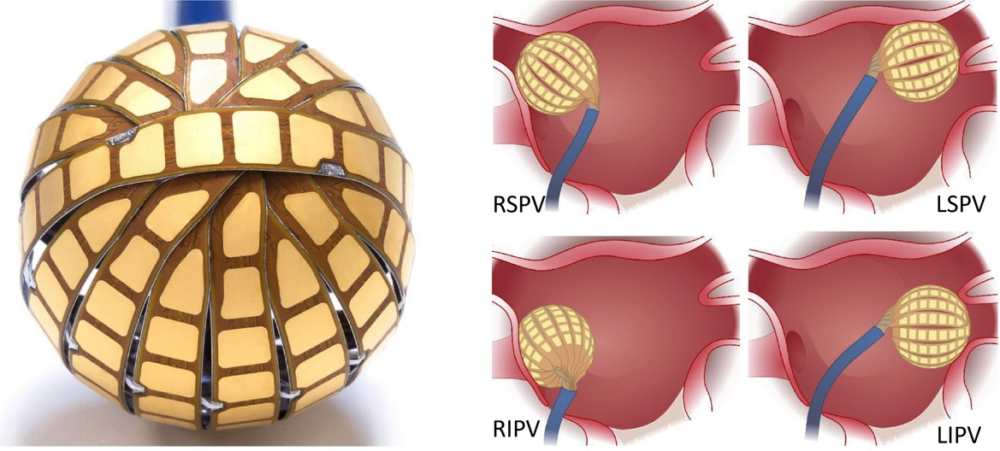

Kardium
Jan 2024 – May 2024
Burnaby, BC
Technologies: Java, Python, Frontend
About Kardium: The Globe System

At a medical device company developing a treatment for heart rhythm disorders, my task was to improve safety-critical software. Using a human-centred design approach, I investigated how systems operated, identified weaknesses, and developed solutions. I collaborated with colleagues across teams (e.g. materials design and manufacturing) to ensure stakeholder-alignment. Facing requirement uncertainties, I grew adept at evaluating competing interests to build consensus within my 4-person team. Enthusiasm for biomedical innovation drove me to learn about Kardium’s big-picture goals. By aligning my work with company objectives, my tool was adopted by the 35-member software team when I presented it at term-end.